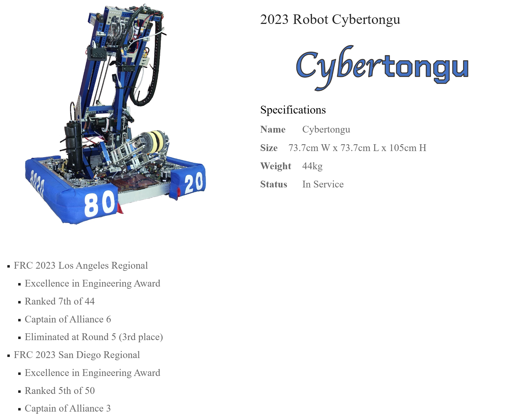

FIRST Robotics Team 8020 · Electrical Team Lead
Wiring a robot so a fault finds itself
Aug 2023 to Jun 2024 · Taipei
A competition robot is rebuilt weekly and breaks on a schedule. The electrical system I designed for it puts a labeled connector between every subsystem and the rest of the machine, so a fault is found by unplugging things rather than tracing wires.
The interactive version of this page is being built. What is here now is the summary.
What I did
- Designed a modular power distribution scheme in which every subsystem meets the robot at a labeled connector, so an electrical fault isolates by disconnecting one function instead of tracing the whole harness.
- Designed the electrical system for each season's competition robot in KiCad, and specified and crimped the harness across power, signal, CAN, network and pneumatic circuits, selecting connector type and wire gauge by current rating.
- Calibrated and programmed CAN bus motor controllers driving brushless actuators and encoders, and integrated a multimodal sensor system of gyroscope, camera and color sensors into closed-loop control, with robot code written in LabVIEW.
- Evaluated pneumatic control hardware against solenoid channel count, CAN compatibility and built-in protection, and documented the trade study.
The robot
